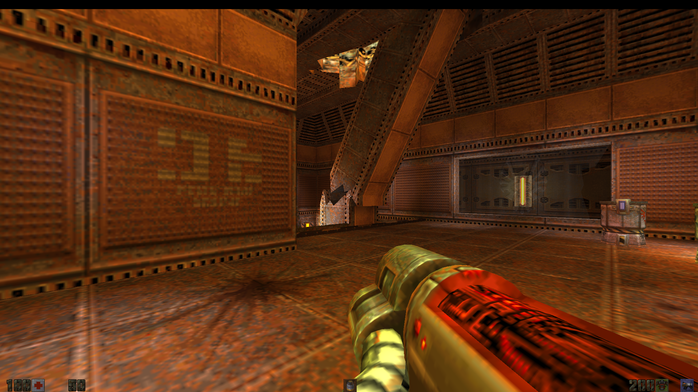
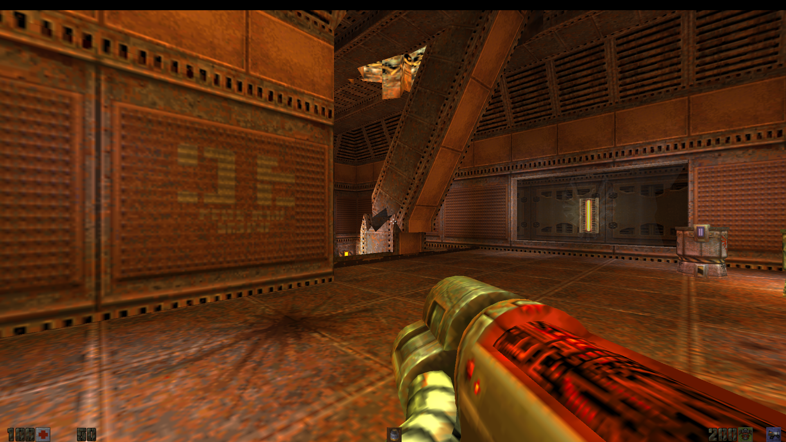

Classic Quake II.Ready for today.
The R1Q2 feel you know. The options you wanted.h0s3r .
Build 8065 Free & open source Quake II game data required
Stock assets. Familiar territory. ↗ BUILT ON R1Q2. STILL QUAKE II. 01 / THE CLIENT
R1GL rendererHor+ widescreen FOVOpenAL audio supportPAK + PKZ asset support
02 / MAKE IT YOURS
Old-school game.More room to tune it. Classic menus and movement, with thoughtful additions for modern screens. These captures use the original Quake II textures and weapons.
01 Your HUD. Move the stock status bar to the top, spread it across a widescreen display, or keep the classic layout. Adjust its scale without resizing the menus.
Stock status bar only. Server and mod HUDs keep their own layouts. HUD PLACEMENT & LAYOUT Play GIF ▶
02 A clearer view. Build 8065 eases the harsh sodium-yellow cast of baked lighting. Switch between the softened look and classic lighting in real time, without reloading the map.
Original textures stay intact. Colored accent lights keep their character. 
CLASSIC ↔ LESS HARSH YELLOW Play GIF ▶
03 Find your Set your crosshair style, size, color and opacity. Per-hand offsets and optional layers let you fine-tune the setup you play with.
Shown here with stock crosshairs. Extra overlay art can come from your own packs. 
CROSSHAIR COLOR & STYLE Play GIF ▶
⌖ A place to play Browse public servers and LAN games. Keep favorites in an Address Book that survives config reloads and game-directory switches.
◉ Hear the world OpenAL support for positional world sounds. Your own shots stay on the listener, with DirectSound fallback available.
⏵ Keep the good runs Automatic demo recording, playback pause and speed controls, plus location files for naming spots on the map.
04 / KNOW YOUR SETTINGS
Meet the console. A searchable guide to display, graphics, HUD, input, network and demo settings. Defaults, explanations and examples, directly from CVARS.md.
Explore the CVAR guide ↗ R1Q2v2 CONSOLE _ □ ×
] seta scr_hudwide 1
] seta cl_adjustfov 1
] seta gl_less_yellow 1
05 / BACK TO THE GAME
Your next sessionstarts here. Get the Windows release, drop it into your existing Quake II installation, and launch R1Q2v2.
WINDOWS / x86 Build 8065
R1Q2v2 Client, dedicated server, R1GL renderer, game module, and required runtime libraries.
Download release ZIP ↓ Requires an existing Quake II installation. Retail / Steam game data is not included. 01 Start with Quake II Install the original game. Quit any running Quake II client and back up your existing binaries.
02 Extract the release Place the files next to quake2.exe. For local single-player, also place gamex86.dll in baseq2/.
03 Launch and tune Run R1Q2v2.exe. Explore the menus or open the CVAR guide to set it up your way.
KEEP THE PROJECT GOING
Enjoy the client?Support the work. R1Q2v2 is free. If you enjoy it, a donation is appreciated. Completely optional.